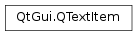

QTextItem¶
Synopsis¶
Detailed Description¶
The
PySide2.QtGui.QTextItemclass provides all the information required to draw text in a custom paint engine.When you reimplement your own paint engine, you must reimplement
QPaintEngine.drawTextItem(), a function that takes aPySide2.QtGui.QTextItemas one of its arguments.
-
class
PySide2.QtGui.QTextItem¶
-
PySide2.QtGui.QTextItem.RenderFlag¶ Constant Description QTextItem.RightToLeft Render the text from right to left. QTextItem.Overline Paint a line above the text. QTextItem.Underline Paint a line under the text. QTextItem.StrikeOut Paint a line through the text.
-
PySide2.QtGui.QTextItem.ascent()¶ Return type: PySide2.QtCore.qrealCorresponds to the
PySide2.QtGui.QFontMetrics.ascent()of the piece of text that is drawn.
-
PySide2.QtGui.QTextItem.descent()¶ Return type: PySide2.QtCore.qrealCorresponds to the
PySide2.QtGui.QFontMetrics.descent()of the piece of text that is drawn.
-
PySide2.QtGui.QTextItem.font()¶ Return type: PySide2.QtGui.QFontReturns the font that should be used to draw the text.
-
PySide2.QtGui.QTextItem.renderFlags()¶ Return type: PySide2.QtGui.QTextItem.RenderFlagsReturns the render flags used.
-
PySide2.QtGui.QTextItem.text()¶ Return type: unicode Returns the text that should be drawn.
-
PySide2.QtGui.QTextItem.width()¶ Return type: PySide2.QtCore.qrealSpecifies the total width of the text to be drawn.
© 2018 The Qt Company Ltd. Documentation contributions included herein are the copyrights of their respective owners. The documentation provided herein is licensed under the terms of the GNU Free Documentation License version 1.3 as published by the Free Software Foundation. Qt and respective logos are trademarks of The Qt Company Ltd. in Finland and/or other countries worldwide. All other trademarks are property of their respective owners.